Что умеет
Выделяете нужный фрагмент кода, нажимаете Ctrl+Alt+F и происходит следующее
1. Вызывается стандартное форматирование Shift+Alt+F
2. Приводит комментарий к виду из стандартов разработки
Добавляет пробелы после // и перед текстом, если их нет, делает заглавной первую букву, переносит комментарии, длиннее 120 символов (длина задается в настройках)
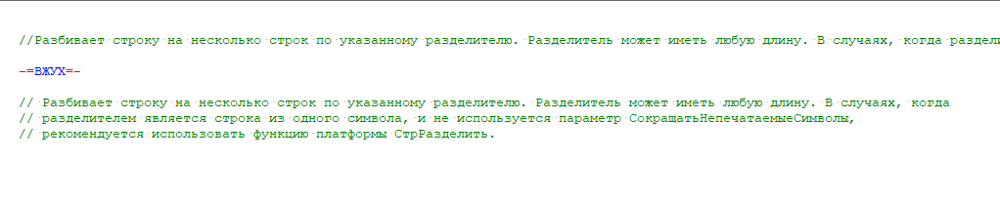
3. Приводит ключевые слова к каноническому виду
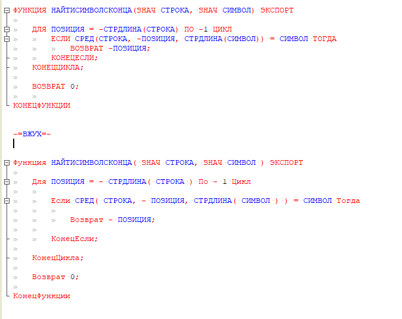
4. Приводит ключевые слова в запросе к каноническому виду
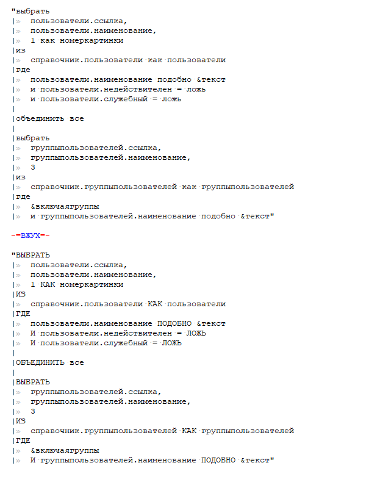
5. Добавляет пустые строки вокруг ключевых конструкций, таких как Если, Для, Функция
Можно отключить в настройках
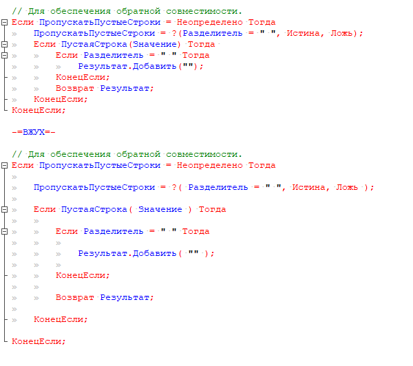
6. Удаляет внутри кода лишние пробелы и табы
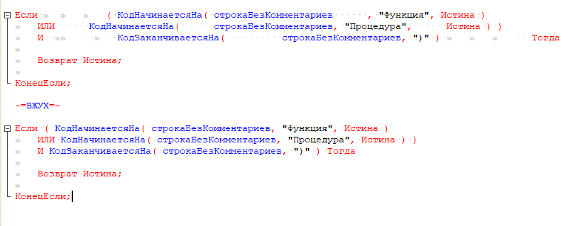
7. Добавляет нужные пробелы вокруг арифметических знаков, запятых и скобок
Добавление пробелов у скобок можно отключить в настройках. Результат будет как в ВЖУХ2
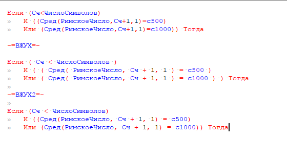
8. Удаляет пробельные символы справа
В отличие от многих альтернатив не превращает пустые строки с отступами в пустые строки.
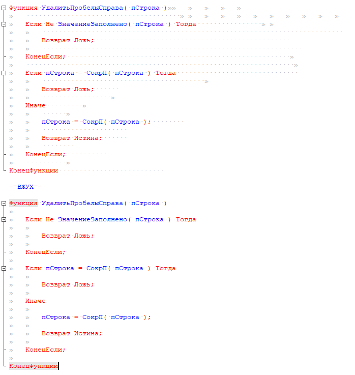
9. Выполняет форматирование перенесенных выражений
Это именно тот пункт, ради которого все и затевалось. Все ведь любят тот момент, когда форматируешь код и все сдвигается влево до упора?
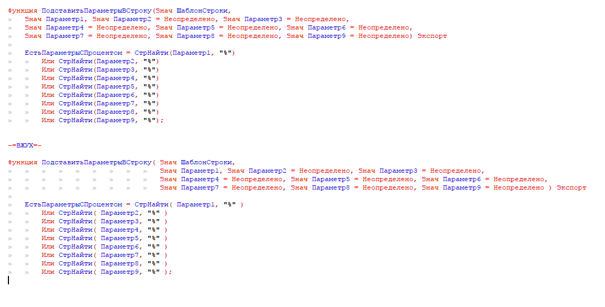
Способ выравнивания запросов задается в настройках
// 0 - не выравнивать.
Запрос.Текст = "ВЫБРАТЬ
| Пользователи.Ссылка КАК Пользователь
|ПОМЕСТИТЬ втПользователи
// 1 - добавлять таб
Запрос.Текст = "ВЫБРАТЬ
| Пользователи.Ссылка КАК Пользователь
|ПОМЕСТИТЬ втПользователи
// 2 - выравнивать по равно
Запрос.Текст = "ВЫБРАТЬ
| Пользователи.Ссылка КАК Пользователь
|ПОМЕСТИТЬ втПользователи
Запрос = Новый Запрос( "ВЫБРАТЬ
| Пользователи.Ссылка КАК Пользователь
|ПОМЕСТИТЬ втПользователи" );
10. Разбивает длинные выражения на несколько строк
Так же выравнивает с учетом Знач. И сразу видно, что кое где их забыли проставить.
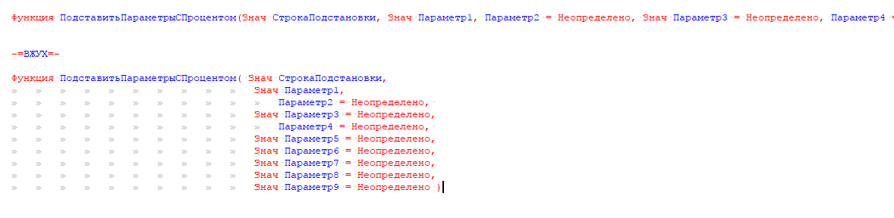
Если после форматирования код начал выглядеть странно. Это повод задуматься над его рефакторингом.
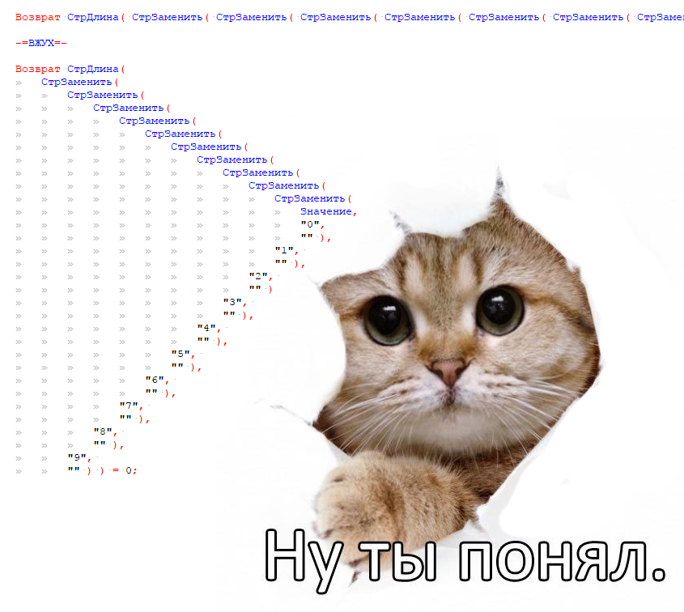
11. Выравнивает код по "=", "(", ",", "//"
Причем если для выравнивания нужно добавить слишком много пробелов, то эта строка выравнивается отдельно, вместе с такими же коротышами. На это влияет параметр СдвигПревышение в настройках.
Выравнивания можно отключить в настройках.
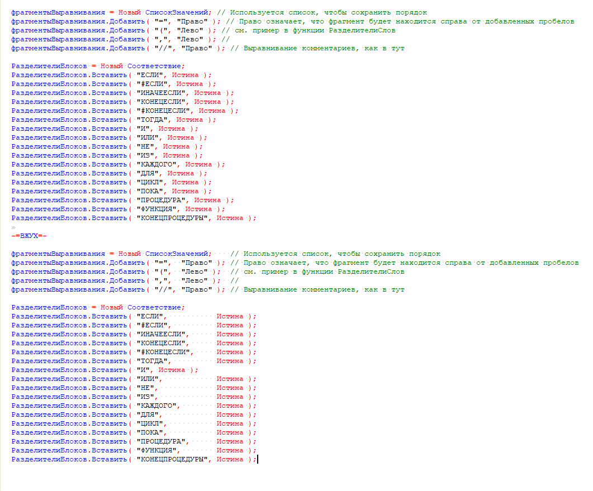
Как начать пользоваться
Нужно скачать и установить autohotkey https://autohotkey.com/
Скачать проект v8CfgAddsAhk отсюда, из основного репо или из моего форка. Нужно учитывать, что на момент выхода этой публикации все изменения были еще в dev ветке, а самые последние изменения могут ожидать одобрения PR.
Если вы в гите разбираетесь чуть лучше, чем никак, то лучше проект себе склонировать или форкнуть, и тогда изменения можно получать более автоматически.
Запустить файл v8CfgAdds.ahk в корне проекта.
В конфигураторе выделить нужный текст и нажать Ctrl+Alt+F
Как изменить настройки
В папке проекта есть файл \configs\OneStyle.json , все немногочисленные настройки там.
Как поучаствовать в развитии, изменить под себя
Весь проект OneStyle написан на oscript и легко может быть доработан среднестатистическим 1Сником.
Если вы хотите поделиться наработками, нашли ошибки, не понимаете что-либо, то можно спросить тут в комментариях, в репозиториях или в чате гиттера
Новое 2017.06.20
Исправлены выявленные ошибки.
Добавлены настройки для выравнивания. См. п.11
Добавлены настройки для выравнивания многострочных строк. См. п. 9
Подробный список изменений с возможность посмотреть изменения в коде